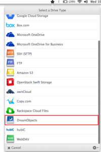
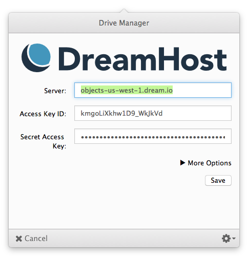
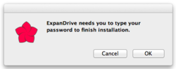
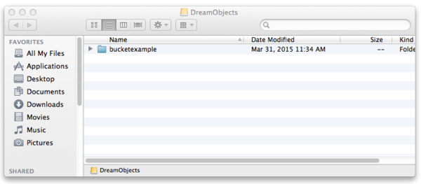
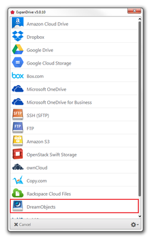
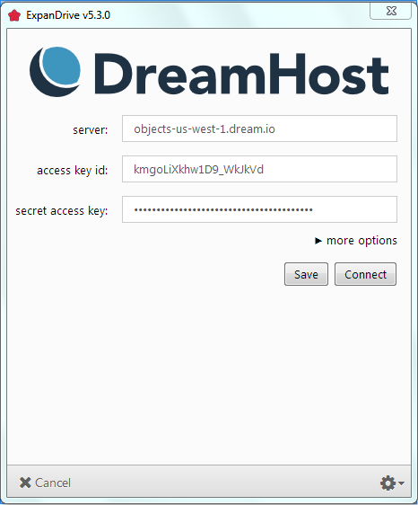
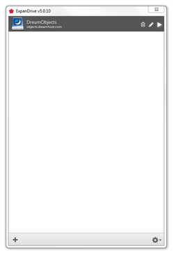
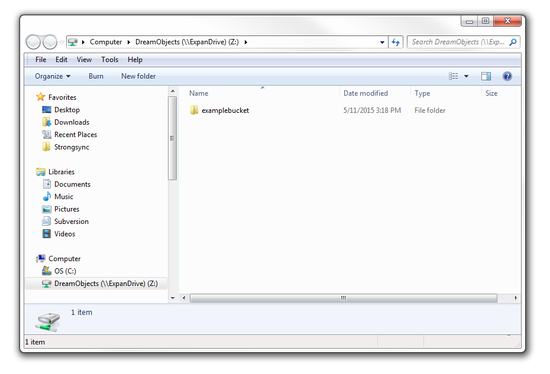

How to Use ExpanDrive with DreamObjects
Overview
ExpanDrive is an app that allows you to connect to DreamObjects just like a USB drive. It is available for both Mac and Windows and allows you to access DreamObjects from any application on your computer. Before you begin, you’ll need to create a bucket on the (Panel > ‘Cloud Services’ > DreamObjects’) page.
 Mac version
Mac version
Launch ExpanDrive and select the DreamObjects drive type.
- Enter the following:
- Server: objects-us-west-1.dream.io
- Access Key ID: Your DreamObjects Access Key
- Secret Access Key: Your DreamObjects Secret Key
- Visit the DreamObjects keys article for details on finding your keys.
Click the Connect button.
You may see a window the first time you connect asking for you to enter you Mac user’s password. Enter it and click OK. This only needs to be done the first time you connect.
The Finder window on your computer opens with your DreamObjects bucket
DreamObjects will now show as a mounted drive. You can see it visible in the sidebar. You’ll also see it in open and save dialogs in your applications letting you easily access your DreamObjects data.
 Windows version
Windows version
Launch ExpanDrive and select the DreamObjects drive type.
- Enter the following:
- Server: objects-us-west-1.dream.io
- Access Key ID: Your DreamObjects Access Key
- Secret Access Key: Your DreamObjects Secret Key
- Visit the DreamObjects keys article for details on finding your keys.
Click the Save button.
Click the arrow icon to the right of the ‘DreamObjects’ option.
An explorer window on your computer opens with your DreamObjects bucket
Your DreamObjects data is now accessible as a mounted drive letting you easily access your DreamObjects data.